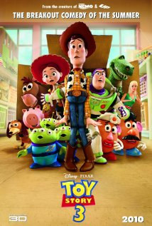

ReviewSkimmer.com
Charts
Presentation
About
Toy Story 3

"Despite my cynical nature, there's no way I can grade this any less than
perfect
."
—
diac228 (diac1987@netscape.net)
"As an
amazing
end to such a magnificent trilogy, "Toy Story 3" is a must watch movie."
—
Prince AJB
"It moved, and shows how valuable it is to be
loved
again, and I thought it was pitch perfect."
—
DICK STEEL
"We are treated to our
favorite
familiar characters and reminded again why we like them so."
—
(prudie_mcprude@yahoo.com)
"It is a
brilliant
tale; a perfect movie for children and adults alike."
—
russb216